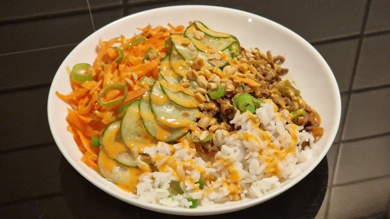

Rice Bowl med kjøttdeig
Raskt måltid med ris, grønnsaker og kjøttdeig
Ingredienser
-
2 dl jasminris
-
4 dl vann
-
75g vårløk (1/2 pakke)
-
20 g revet ingefær (en liten bit)
-
50ml hoisinsaus
-
50ml vann
-
400g kjøttdeig
-
300 g gulrot
-
lettsyltet agurk
-
grovhakkede peanøtter
-
chilimajones (1:5 sriracha:majones (etter vekt) er et greit utgangspunkt, men juster etter ønske)
Anvisning
- Kok ris.
- Riv gulrøtter.
- Kutt vårløk i tynne skiver. Skill den hvite rotenden fra det grønne.
- Bland ingefær, hoisinsaus og vann.
- Stek kjøttdeig med olje i en panne.
- Tilsett hoisinblandingen når kjøttet er gjennomstekt.
- Tilsett den hvite halvdelen av vårløken og rør sammen.
- Server skåler med ris, kjøttdeig, gulrot, vårløk, lettsyltet agurk, chilimajones og peanøter.
Notater
Inspirert av rice bowl-oppskrifter (1, 2) fra Adams matkasse.